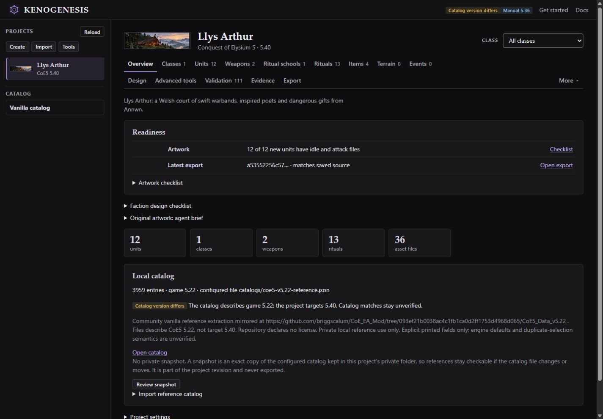

KENOGENESIS
Conquest of Elysium 5 / Modding tool
KENOGENESIS helps you make classes and factions for Conquest of Elysium 5. It runs on your computer and opens in your browser, where you can browse, edit, check and export your mod. Codex or Claude Code can build new content from a short brief.
AI is optional. You can browse, edit and export without it. To generate content, use Codex or Claude Code with your own account; its normal subscription or API costs apply.
Features
- Make or import classes and factions. Build new ones with your agent, or import an existing
.c5mmod. Each comes with briefs for original artwork. - Browse and edit. Edit unit stats and abilities, and view idle and attack poses. Rituals, items and classes have their own tabs.
- Compare in Design. See comparisons backed by sources. With an optional private catalog of the base game, which you add yourself, you can also compare with vanilla content. There's no balance score.
- Preview before applying. Changes are previewed first and applied only when you confirm.
- Check and export. Validation lists errors, warnings and anything it couldn't verify. Export your mod as a ZIP.
Limits:
- Validation covers only part of the modding manual. 0 errors doesn't mean the game will accept the mod, so test it in Conquest of Elysium 5.
- Exports aren't installed in the game or uploaded to Steam for you.
- Maps can be imported and packaged as they are. KENOGENESIS doesn't make or edit maps.
Screenshots
These screenshots show Llys Arthur, an example Welsh court faction with original artwork. They show how authoring works, not tested gameplay or balance, and the faction isn't available to download. Choose a screenshot below, then select the large image to see it full size.




Requirements and getting started
You need:
- Python 3.11 or newer. The core tool and browser interface use only the Python standard library; optional extras can need other dependencies.
- Conquest of Elysium 5, to play and test your mod.
- Optional: an account for Codex or Claude Code, to generate content.
Getting started:
- Download the source ZIP and extract it.
- Open PowerShell in the extracted folder and run
.\start.ps1 -Workspace .\work -OpenBrowser. This creates a privateworkfolder for your projects and opens KENOGENESIS athttp://127.0.0.1:8766. - To generate content, open Codex or Claude Code in the same folder.
- Choose Get started, fill in the brief and paste the instructions into your agent.
- When your agent is done, press Reload to see the result.
The KENOGENESIS README is the full setup guide, with troubleshooting and optional extras such as the private catalog. These steps are for Windows and PowerShell.
Downloads and source
There's no packaged release yet. Download the current source instead.
- Source ZIP: the current source from the main branch.
- README: the setup guide, plus features and limits.
- Source on GitHub: the source code is licensed under GPLv3.
KENOGENESIS is an independent tool. Conquest of Elysium 5 belongs to Illwinter Game Design, and no game files are included.